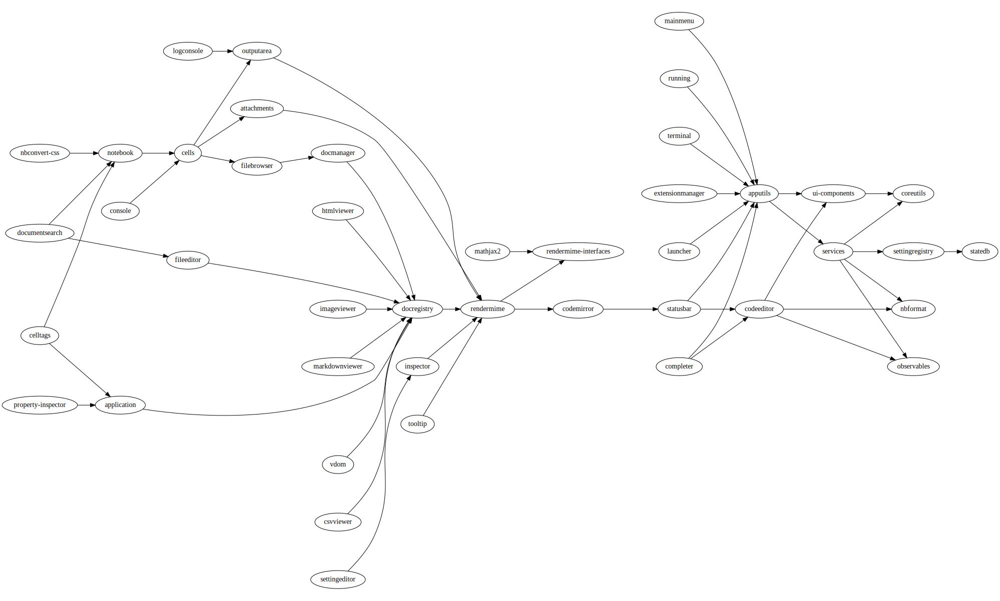

Extension Developer Guide¶
JupyterLab can be extended in three ways via:
- application plugins (top level): Application plugins extend the functionality of JupyterLab itself.
- mime renderer extension (top level): Mime Renderer extensions are a convenience for creating an extension that can render mime data and potentially render files of a given type.
- document widget extensions (lower level): Document widget extensions extend the functionality of document widgets added to the application, and we cover them in the “Documents” tutorial.
See Let’s Make an xkcd JupyterLab Extension to learn how to make a simple JupyterLab extension.
A JupyterLab application is comprised of:
- A core Application object
- Plugins
Plugins¶
A plugin adds a core functionality to the application:
A plugin can require other plugins for operation.
A plugin is activated when it is needed by other plugins, or when explicitly activated.
Plugins require and provide
Tokenobjects, which are used to provide a typed value to the plugin’sactivate()method.The module providing plugin(s) must meet the JupyterLab.IPluginModule interface, by exporting a plugin object or array of plugin objects as the default export.
We provide two cookie cutters to create JuptyerLab plugin extensions in CommonJS <https://github.com/jupyterlab/extension-cookiecutter-js> and TypeScript <https://github.com/jupyterlab/extension-cookiecutter-ts>.
The default plugins in the JupyterLab application include:
- Terminal - Adds the ability to create command prompt terminals.
- Shortcuts - Sets the default set of shortcuts for the application.
- Images - Adds a widget factory for displaying image files.
- Help - Adds a side bar widget for displaying external documentation.
- File Browser - Creates the file browser and the document manager and the file browser to the side bar.
- Editor - Add a widget factory for displaying editable source files.
- Console - Adds the ability to launch Jupyter Console instances for interactive kernel console sessions.
A dependency graph for the core JupyterLab plugins (along with links to their source) is shown here: 
Application Object¶
The JupyterLab Application object is given to each plugin in its
activate() function. The Application object has a:
- commands - used to add and execute commands in the application.
- keymap - used to add keyboard shortcuts to the application.
- shell - a JupyterLab shell instance.
JupyterLab Shell¶
The JupyterLab shell is used to add and interact with content in the application. The application consists of:
- A top area for things like top level menus and toolbars
- Left and right side bar areas for collapsible content
- A main area for user activity.
- A bottom area for things like status bars
Phosphor¶
The Phosphor library is used as the underlying architecture of JupyterLab and provides many of the low level primitives and widget structure used in the application. Phosphor provides a rich set of widgets for developing desktop-like applications in the browser, as well as patterns and objects for writing clean, well-abstracted code. The widgets in the application are primarily Phosphor widgets, and Phosphor concepts, like message passing and signals, are used throughout. Phosphor messages are a many-to-one interaction that allows information like resize events to flow through the widget hierarchy in the application. Phosphor signals are a one-to-many interaction that allow listeners to react to changes in an observed object.
Extension Authoring¶
An Extension is a valid npm package that meets the following criteria:
- Exports one or more JupyterLab plugins as the default export in its main file.
- Has a
jupyterlabkey in itspackage.jsonwhich has"extension"metadata. The value can betrueto use the main module of the package, or a string path to a specific module (e.g."lib/foo").
While authoring the extension, you can use the command:
npm install # install npm package dependencies
npm run build # optional build step if using TypeScript, babel, etc.
jupyter labextension install # install the current directory as an extension
This causes the builder to re-install the source folder before building
the application files. You can re-build at any time using
jupyter lab build and it will reinstall these packages. You can also
link other local npm packages that you are working on simultaneously
using jupyter labextension link; they will be re-installed but not
considered as extensions. Local extensions and linked packages are
included in jupyter labextension list.
When using local extensions and linked packages, you can run the command
jupyter lab --watch
This will cause the application to incrementally rebuild when one of the linked packages changes. Note that only compiled JavaScript files (and the CSS files) are watched by the WebPack process.
Note that the application is built against released versions of the
core JupyterLab extensions. If your extension depends on JupyterLab
packages, it should be compatible with the dependencies in the
jupyterlab/static/package.json file. If you must install a extension
into a development branch of JupyterLab, you have to graft it into the
source tree of JupyterLab itself. This may be done using the command
jlpm run add:sibling <path-or-url>
in the JupyterLab root directory, where <path-or-url> refers either
to an extension npm package on the local filesystem, or a URL to a git
repository for an extension npm package. This operation may be
subsequently reversed by running
jlpm run remove:package <extension-dir-name>
This will remove the package metadata from the source tree, but wil
not remove any files added by the addsibling script, which
should be removed manually.
The package should export EMCAScript 5 compatible JavaScript. It can
import CSS using the syntax require('foo.css'). The CSS files can
also import CSS from other packages using the syntax
@import url('~foo/index.css'), where foo is the name of the
package.
The following file types are also supported (both in JavaScript and CSS): json, html, jpg, png, gif, svg, js.map, woff2, ttf, eot.
If your package uses any other file type it must be converted to one of the above types. If your JavaScript is written in any other dialect than EMCAScript 5 it must be converted using an appropriate tool.
If you publish your extension on npm.org, users will be able to install
it as simply jupyter labextension install <foo>, where <foo> is
the name of the published npm package. You can alternatively provide a
script that runs jupyter labextension install against a local folder
path on the user’s machine or a provided tarball. Any valid
npm install specifier can be used in
jupyter labextension install (e.g. foo@latest, bar@3.0.0.0,
path/to/folder, and path/to/tar.gz).
Mime Renderer Extensions¶
Mime Renderer extensions are a convenience for creating an extension that can render mime data and potentially render files of a given type. We provide cookiecutters for Mime render extensions in JavaScript and TypeScript.
Mime renderer extensions are more declarative than standard extensions.
The extension is treated the same from the command line perspective
(jupyter labextension install ), but it does not directly create
JupyterLab plugins. Instead it exports an interface given in the
rendermime-interfaces
package.
The JupyterLab repo has an example mime renderer extension for pdf files. It provides a mime renderer for pdf data and registers itself as a document renderer for pdf file types.
The rendermime-interfaces package is intended to be the only
JupyterLab package needed to create a mime renderer extension (using the
interfaces in TypeScript or as a form of documentation if using plain
JavaScript).
The only other difference from a standard extension is that has a
jupyterlab key in its package.json with "mimeExtension"
metadata. The value can be true to use the main module of the
package, or a string path to a specific module (e.g. "lib/foo").
The mime renderer can update its data by calling .setData() on the
model it is given to render. This can be used for example to add a
png representation of a dynamic figure, which will be picked up by a
notebook model and added to the notebook document. When using
IDocumentWidgetFactoryOptions, you can update the document model by
calling .setData() with updated data for the rendered MIME type. The
document can then be saved by the user in the usual manner.
Themes¶
A theme is a JupyterLab extension that uses a ThemeManager and can
be loaded and unloaded dynamically. The package must include all static
assets that are referenced by url() in its CSS files. Local URLs can
be used to reference files relative to the location of the referring CSS
file in the theme directory. For example url('images/foo.png') or
url('../foo/bar.css')can be used to refer local files in the
theme. Absolute URLs (starting with a /) or external URLs (e.g.
https:) can be used to refer to external assets. The path to the
theme assets is specified package.json under the "jupyterlab"
key as "themeDir". See the JupyterLab Light
Theme
for an example. Ensure that the theme files are included in the
"files" metadata in package.json. A theme can optionally specify an
embed.css file that can be consumed outside of a JupyterLab
application.
To quickly create a theme based on the JupyterLab Light Theme, follow
the instructions in the contributing
guide and
then run jlpm run create:theme from the repository root directory.
Once you select a name, title and a description, a new theme folder will
be created in the current directory. You can move that new folder to a
location of your choice, and start making desired changes.
The theme extension is installed the same as a regular extension (see [extension authoring](#Extension Authoring)).
Standard (General-Purpose) Extensions¶
See the example, How to Extend the Notebook Plugin. Notice that the mime renderer and themes extensions above use a limited, simplified interface to JupyterLab’s extension system. Modifying the notebook plugin requires the full, general-purpose interface to the extension system.
Extension Settings¶
An extension can specify user settings using a JSON Schema. The schema
definition should be in a file that resides in the schemaDir
directory that is specified in the package.json file of the
extension. The actual file name should use is the part that follows the
package name of extension. So for example, the JupyterLab
apputils-extension package hosts several plugins:
'@jupyterlab/apputils-extension:menu''@jupyterlab/apputils-extension:palette''@jupyterlab/apputils-extension:settings''@jupyterlab/apputils-extension:themes'
And in the package.json for @jupyterlab/apputils-extension, the
schemaDir field is a directory called schema. Since the
themes plugin requires a JSON schema, its schema file location is:
schema/themes.json. The plugin’s name is used to automatically
associate it with its settings file, so this naming convention is
important. Ensure that the schema files are included in the "files"
metadata in package.json.
See the fileeditor-extension for another example of an extension that uses settings.
Storing Extension Data¶
In addition to the file system that is accessed by using the
@jupyterlab/services package, JupyterLab offers two ways for
extensions to store data: a client-side state database that is built on
top of localStorage and a plugin settings system that allows for
default setting values and user overrides.
State Database¶
The state database can be accessed by importing IStateDB from
@jupyterlab/coreutils and adding it to the list of requires for
a plugin:
const id = 'foo-extension:IFoo';
const IFoo = new Token<IFoo>(id);
interface IFoo {}
class Foo implements IFoo {}
const plugin: JupyterLabPlugin<IFoo> = {
id,
requires: [IStateDB],
provides: IFoo,
activate: (app: JupyterLab, state: IStateDB): IFoo => {
const foo = new Foo();
const key = `${id}:some-attribute`;
// Load the saved plugin state and apply it once the app
// has finished restoring its former layout.
Promise.all([state.fetch(key), app.restored])
.then(([saved]) => { /* Update `foo` with `saved`. */ });
// Fulfill the plugin contract by returning an `IFoo`.
return foo;
},
autoStart: true
};